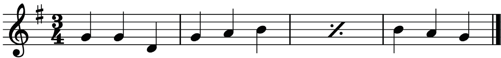
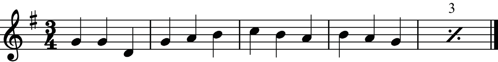
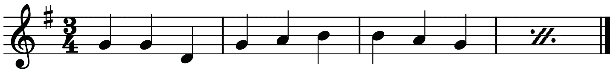
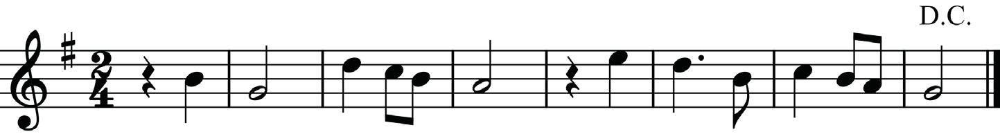

These are hereby explained and shown in figures 4.11 to 4.14.
(a) This is a sign which shows that the previous one bar should be repeated. Observe the example in Figure 4.11.

Sometimes, the sign is embedded with numerals to indicate the number of bars to be repeated. For example, when ‘3’ is embedded in the sign, it means that the previous three bars should be repeated. Observe the example in Figure 4.12.

(b) This is a sign that shows that the previous two bars should be repeated. Observe the example in Figure 4.13.

(c) Da Capo (D.C.): This is a term that means, “Repeat from the beginning.”
This term is normally used in long musical pieces, which may include other repetition signs. When a composer needs performers to repeat a section or whole piece of music from the beginning, the term Da Capo (D.C.) is used, as shown in Figure 4.14.

(d) Dal Segno (D.S.): This term refers to “repeat from the sign .” When this term is used in a piece of music, a performer is required to repeat the music from the section marked by the sign . Observe the example in Figure 4.15.